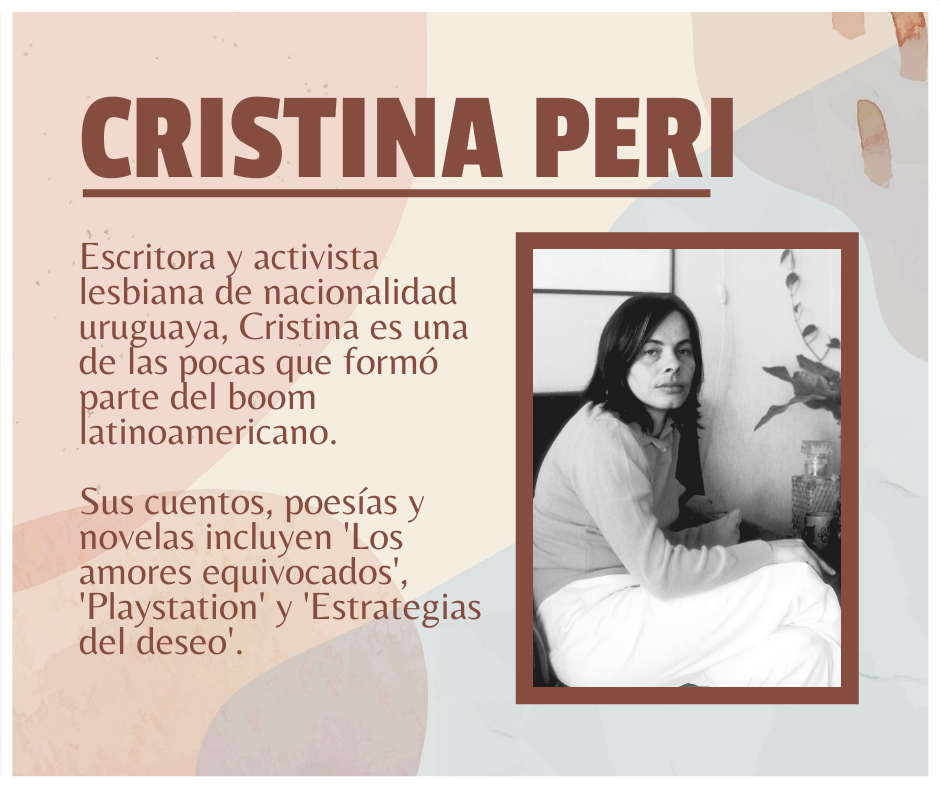
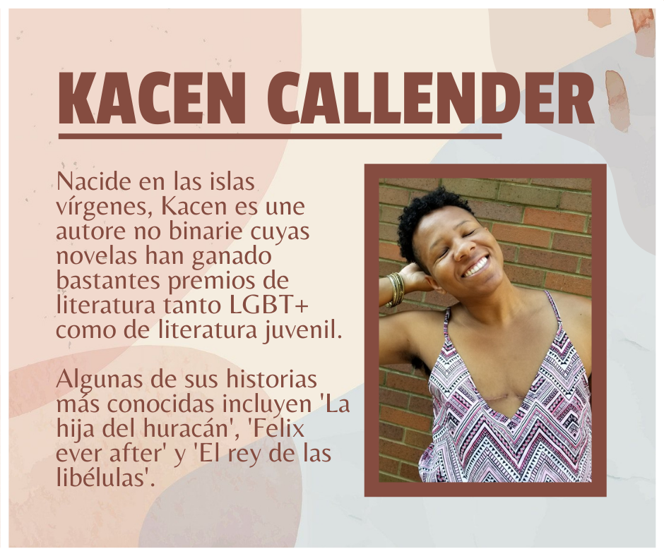
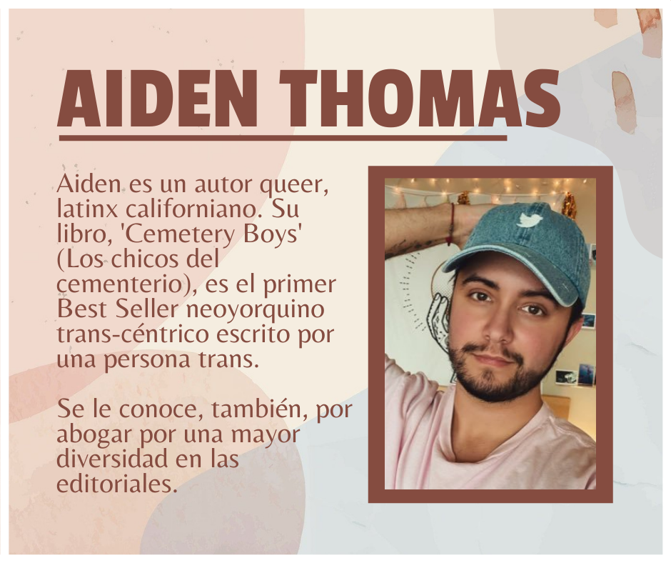
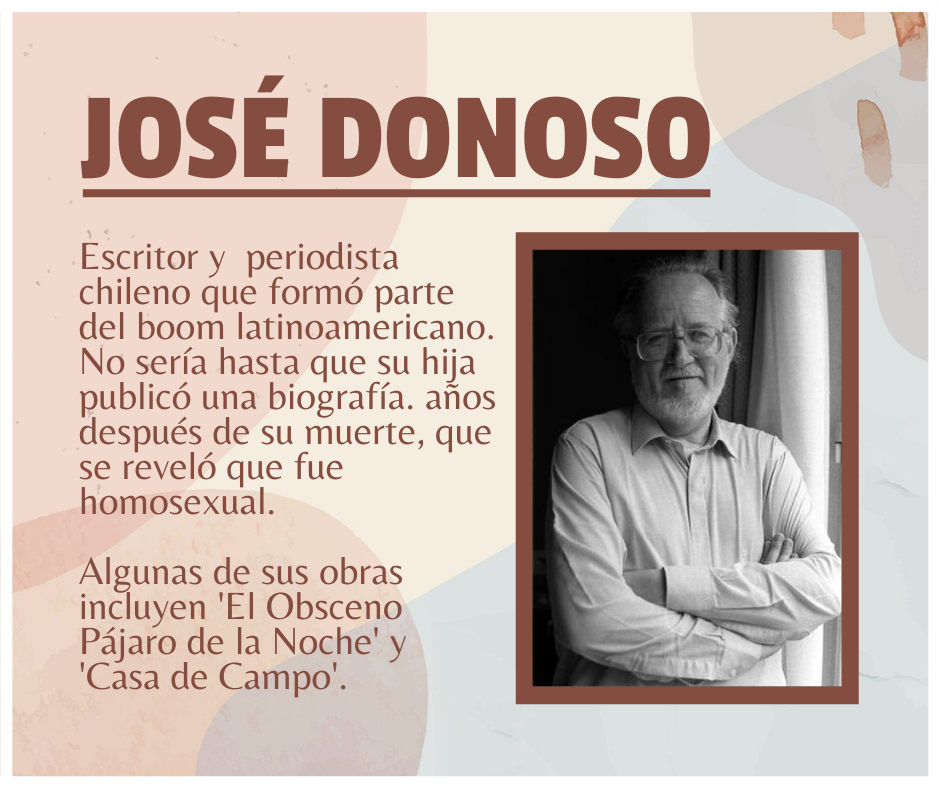

Textos y experiencias




Lo que hay aquí son experiencias y queremos compartirlas contigo!
Comunidades interculturales y multiculturales
Muchos de los espacios de lectura se desarrollan en contextos multiculturales, es decir que conviven en un espacio geográfico distintos sistemas de creencias morales e ideológicas.
Pero el significado de comunidad multicultural no se atiene solo a la pluralidad de prácticas, sino que se rige por un sistema de prácticas de tolerancia. La multiculturalidad no se atiene solamente a etnias sino también
a los distintos parámetros que definen la identidad de las personas i.e sexualidad, discapacidad, ideología etc. En cambio, la interculturalidad, es un concepto que define a comunidades multiculturales, pero como sistemas descentralizados
y horizontales, en los que se aceptan y asimilan las costumbres de otros grupos y hay un sistema de valores que competen a todos por igual, una inclusión social, política y educativa (Aguado, 1996; Aguado, 2004).
Odina (2004) define a la educación intercultural de la siguiente manera: “La reflexión sobre la educación, entendida como elaboración cultural, y basada en la valoración de la diversidad cultural, promueve prácticas educativas
dirigidas a todos y cada uno de los miembros de la sociedad en su conjunto. Propone un modelo de análisis y de actuación que afecte a todas las dimensiones del proceso educativo. Se trata de lograr la igualdad de oportunidades
(entendida como oportunidades de elección y de acceso a recursos sociales, económicos y educativos), la superación del racismo y la competencia intercultural en todas las personas, sea cual sea su grupo cultural de referencia”
Algunas comunidades migrantes tienen mayor presencia de rasgos plurilingüísticos y multiétnicos, además de que las implicaciones de su organización son debidas a un sentimiento de emancipación de las normas de su lugar de origen
y a la aspiración de una movilidad social. Sin embargo, todas estas definiciones que categorizan los grupos sociales por rasgos determinados de su condición de vida pueden desvalorizar individuo. Esto aplica para las categorías
de migrantes, indígenas, cuya definición parte de un conjunto de rasgos sociales y étnicos que no reflejan su pluralidad ni dan cuenta del individuo como sujeto histórico que se autodetermina, en nuestra labor como mediadores de
lectura debemos de reforzar las practicas que afianzan la individualidad, y el reconociendo como miembros de un colectivo.
La comunalidad es un enfoque teórico impulsado principalmente por dos teóricos: Jaime Martínez Luna y Felisberto
Díaz (2016). Una práctica y modo de pensamiento nacido en los pueblos del sur de México que evita actitudes colonizadoras y neoliberales ligadas a los procesos culturales. Por ejemplo, el ser llamado “indígena” palabra que muestra
la tendencia de folclorizar las costumbres de los pueblos y a determinar que estos se definen sólo por su pasado histórico, inhibiendo su concepción moderna y con ello volviendo invisibles sus necesidades. La comunalidad permite
un diálogo entre nuestra herencia histórica y el presente, porque dentro de ella nos concebimos como sujetos históricos que no están atados a su pasado cultural, sino que sus prácticas presentes son el resultado del individuo y
su interacción su entorno y las personas que le rodean. Es necesario evitar enfoques que aboguen por “conservar” la cultura. Incitar a la interculturalidad deviene en mayor empatía y comprensión de la alteridad. La comunalidad
también implica que las entidades comunitarias se comprometan con su espacio (tequio), con su organización y que sea consciente del rol que desean y adquieren.
2. Diagnóstico de la comunidad
La investigación y determinación de las necesidades en las comunidades es necesaria para definir estrategias de intervención. Una manera de acercarnos a las personas son los métodos etnográficos. Es necesario aclarar que
el uso de una metodología de investigación social no implica una deshumanización de las personas. Existen distintos enfoques que critican la cosificación de los individuos en sujetos de estudio. Nuestro acercamiento siempre debe
ser ameno. El mediador debe procurar un acercamiento que permita la apertura de vínculos emocionales y prácticas cómodas. Los métodos etnográficos son aquellos que, a través de observación, diálogo y la entrevista recoge describen
los componentes de una cultura dada en un grupo social humano. Un enfoque muy relevante es a través de las historias de vida.
El método etnográfico debe de ser multifocal, esto quiere decir que debe de tomar en cuenta los momentos
de alegría, crisis, las transiciones que tuvo el individuo hasta el punto actual, sus afectos, sus motivos y básicamente cualquier cosa que se tenga ganas de compartir. Tener esta información nos permite conocer las inquietudes
de quienes habitan el albergue, necesario para orientar las actividades o para incitar a la participación. Hablar directamente sobre las historias de vida puede ser difícil para muchas personas. La mediación de lectura nos permite
llegar a estas reflexiones por medio de las narraciones, las cuales representan un modelo referencial de significados. Al incitar el diálogo sobre las historias podemos conocer la opinión de hechos y sucesos determinados, podemos
saber el grado de apropiación del lector al integrar en su discurso referencias a su vida o a conocimientos previos. A su vez la actividad hace que el lector de cuenta de sus opiniones y los contrastes en un espacio seguro. Para
más información puede consultar en la bibliografía “etnografías y métodos etnográficos”
3 Estrategias Comunitarias
Las cartografías y las reescrituras son dos ejercicios valiosos para poner en práctica la idea de construcción comunitaria
a través de la lectura simbólica de textos escritos y espaciales. Sirven para que los participantes en estas actividades visualicen relaciones sociales, afectivas, emocionales, intelectuales y para jugar con los tipos de lenguaje
representativo que casi todas las veces nos hacen caer en la elaboración de nuevos aprendizajes. a) Cartografías Cuando estamos en casa tenemos un lugar para leer, otro para trabajar, otro más para dormir, tenemos quizá un lugar
para las plantas. Si tenemos mascotas hay un lugar designado para que coman y otro para que duermen. Pero ¿quién define estos espacios? ¿qué tanto los habitamos y qué tan conscientes somos de las características únicas de ese lugar?
Tener ubicados los lugares que transitamos es una herramienta para asomarnos a los espacios que representan nuestra cotidianidad y quienes somos por ellos. La actividad no se extralimita a la casa, nuestra relación con la ciudad
implica una relación orgánica con las calles, las avenidas, los pasos vehiculares, los accesos peatonales, todo aquellos que restringe la movilidad a rutas determinadas. La relación también incluye el por qué definimos nuestros
caminos: seguridad, servicios, facilidad, tiempo, gusto. Hacer una cartografía no es calcar el espacio sino simbolizarlo, es hacer visible y patente un espacio habitado por un grupo social. ¿qué otras zonas habitan los migrantes
en la ciudad? ¿qué servicios les rodean y cómo interactúan? ¿a qué se debe la redistribución de los grupos sociales?
Al momento de construir grupalmente cartografías se comparten afectos, intereses, valoraciones, invita a poner
más atención en el lugar en el que estamos, también a relacionarse afectivamente Otra manera de trazar el imaginario es mapear los objetos con los cuales nos relacionamos. Usualmente los objetos que guardamos están relacionados
a experiencias afectivas con los cuales construimos imaginario. Usualmente las personas en condiciones de migración generan algo conocido como remesa cultural, se envían fotografías de familiares, vídeos de eventos importantes,
fotografías de santos, objetos ligados a los recuerdos y a la identidad con los que cargan siempre. ¿hay algún objeto que guardes por su mero valor simbólico? ¿has reparado en los detalles de las rutas que usas para llegar de un
destino a otro? ¿tienes algún recuerdo en especial en esos lugares? ¿has entablado relación con la gente que se cruza en tu ruta? Te invito a reflexionar esas preguntas y a pensar en cómo influyen en nuestra relación con el lugar
donde vives (Campillo & Sánchez, 2011; Guatari F, 2006).
b) Reescrituras La reescritura es una práctica de escritura que tiene una estrecha relación con la práctica de la deriva y de trazar el espacio en formas simbólicas. La reescritura
es perderse en el lenguaje a través de su repetición, yuxtaponer elementos, hacer collage, mezclar y reelaborar historias que nos llegan. La repetición contrapone, es contraste, los sonidos se acumulan y las palabras alteran su
significado cuando se adhieren a nuestro pensamiento. Si yo repito 100 veces la palabra libro, sería insensato pensar que las 100 veces pensaré lo mismo. ¿Qué narrativas imperan en nuestro día a día y en lo que consumimos en series,
películas, anuncios, que narrativa ideológica tiene nuestro tiempo? ¿cómo podemos reescribir estas narrativas sociales a través de la comunidad? Cristina Rivera Garza (2019) en su libro los muertos indóciles, comienzan hablando
de cómo la violencia en América Latina (centrando su enfoque en México) estamos expuestos a condiciones de violencia extremas, no solo por fuerzas coercitivas que antes eran la policía o el ejército, también el narcotráfico, redes
de explotación y tráfico de personas, migraciones forzadas y cuando estas no lo son, condiciones de vida deplorables. La violencia que sufre la población, física y psicológica no es una que atente contra la vida sino contra las
condiciones de la misma. Michael Foucault llamo a esto Biopoder, formas de regular la calidad de vida mediante dinámicas políticas (migración, salud, alimentación). A las políticas que condicionan la vida en esta óptica se les
conoce como necropolíticas. ¿Porque traer esto al marco de la lectura y escritura?
Cristina Rivera Garza contrapone el uso de la escritura como una herramienta de resistencia, pero no atada a la anquilosada idea de “dar voz” o
“ser empáticos”, sino construir una comunidad a través de la palabra, la expresión y que esa palabra y produzca presente, es decir genere cambios, esté ligada a la acción. Cristina denomina necroescrituras a las escrituras que
se producen bajo condiciones de dominio necropolítico. La especial relevancia de este contrapunto es que se concibe a la escritura no solo por su valor estético, sino por la dimensión que tiene realmente para dignificar la calidad
de vida, muy lejana a su sentido editorial, comercial y al al que estamos acostumbrados y que no deja de ser relevante. Usualmente escuchamos el concepto de apropiación como una práctica de integrar individualmente y emocionalmente
el conocimiento construido en común.
Por otro lado, la desapropiación es poner en práctica procesos de escritura comunal, donde participen más de dos manos y que no se rija por determinar ías. El valor de estas escrituras
recae en que hablan de temas vedados, hacen visibles sectores minorizados, practicas comunitarias ligadas a la transformación social, a la conformación de espacios seguros para la expresión ideológica y afectiva, hay un compromiso
con el territorio al que se pertenece, y muy importante, el cuidado mutuo ente los integrantes. Desde nuestro “quehacer” podemos ejercer estás prácticas. La cultura tiene un poder crucial para determinar las construcciones sociales,
después de todo de la violencia es cultural, se transmite a través de prácticas discursivas, el lenguaje es una herramienta e instrumento que se forma influenciado por estas prácticas. Vincularnos a través de un discurso y prácticas
emocionales e intelectuales es resistir y transformar desde lo que nos hace común.
Si tienes un espacio de lectura puedes enviarnos un mensaje y compartir con nosotros tus experiencias para que aparezcan aquí.
Conoce más